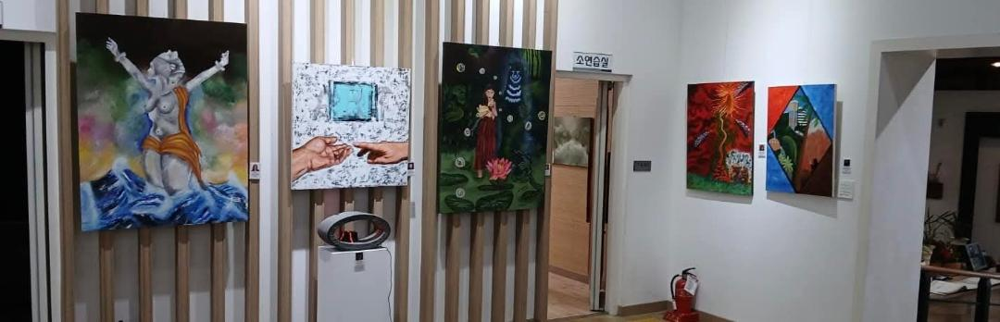

Artista visual · Pintura surrealista · Memoria · Territorio · Estados psíquicos
Leer statementMi nombre es Belén Estrada Franco. Soy artista visual originaria del Estado de México, especializada en pintura con un enfoque surrealista. A través de mi obra, exploro los vínculos entre lo cotidiano y lo simbólico. Mi trabajo parte de una mirada introspectiva y sensorial sobre el entorno, reinterpretando desde lo onírico. Me interesa crear imágenes que, más allá de representar una realidad visible, convoquen al espectador a habitar lo invisible: los afectos, las memorias, las tensiones sociales y las experiencias fragmentadas que conforman nuestra percepción del mundo. La pintura, como medio, me permite traducir estas dimensiones en escenas poéticas donde lo mágico y lo infraordinario conviven. A lo largo de mi trayectoria he participado en exposiciones colectivas y he desarrollado proyectos pictóricos que articulan una investigación estética y conceptual sobre el territorio, la identidad y los estados psíquicos. Mi obra busca generar un diálogo entre el arte y la vida, abriendo espacios de reflexión sensible desde lo visual. Este portafolio reúne una selección de piezas que forman parte de esa exploración constante: imágenes que brotan del inconsciente, pero están ancladas en lo más concreto de la experiencia cotidiana. Cada pintura es una cartografía emocional, un intento de nombrar lo que no siempre se puede decir con palabras.
A lo largo de mi trayectoria he participado en numerosas exposiciones colectivas e individuales, tanto a nivel nacional como internacional. Entre las más relevantes destacan: